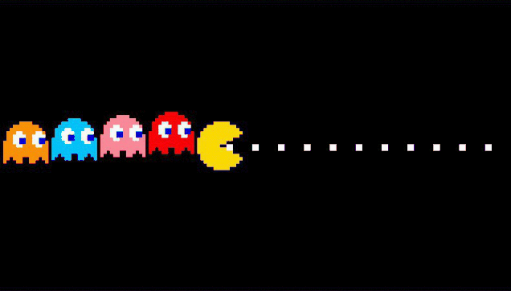

Power Retro Lab

" alt="Pac-Man Loading" class="pacman-gif">recréation complète du joystick de la Fairchild Channel F.
travaille actuellement sur la recréation complète du joystick de la Fairchild Channel F.
REVERSE ENGINEERING
PS2 EYETOY: CHAT
Analyse du trafic réseau et rétro-ingénierie des serveurs Medius/SCERT. Compilation d'exécutables ELF avec le PS2SDK pour restaurer les fonctionnalités en ligne.
APPLE II EUROPLUS
& ECRANS CRT
Restauration d'alimentations Astec (suppression des condensateurs RIFA) et maintenance de moniteurs cathodiques Thomson et Sony Trinitron.